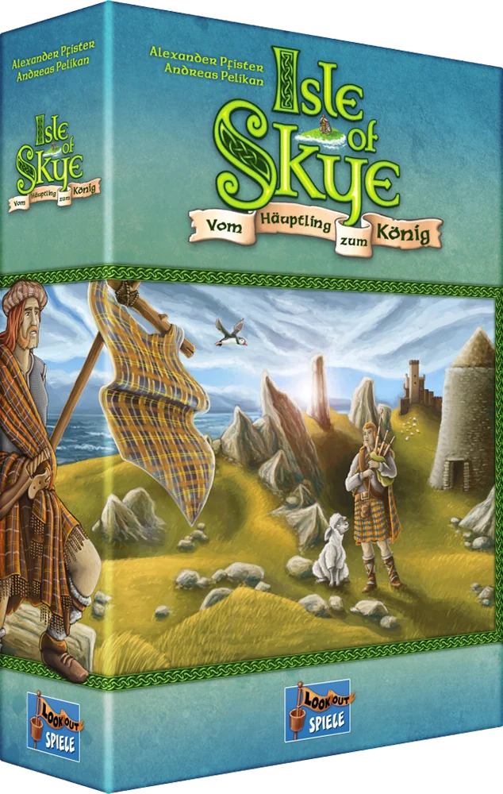

Resumo em 30 segundos
Destaques
- O preço que fala
- Cada partida pontua diferente
- Manual curto, cabeça cheia
Atenção
- Escócia de cartão-postal
- O escudo que demora
- Fôlego em dúvida
1 vitória em prêmios, incluindo Kennerspiel des Jahres 2016 · Kennerspiel des Jahres
Para quem: gosta de blefar com números e ler a intenção dos outros; já jogou Carcassonne e procura o passo seguinte, com dinheiro na mesa.
Como funciona Isle of Skye
Ponha preço nas suas peças, compre a do vizinho e monte o território do clã para cumprir objetivos sorteados.
- 1
Receba a renda
Ganhe 5 moedas pelo castelo, mais 1 por barril de uísque ligado por estrada e, da terceira rodada em diante, um extra por adversário à sua frente.
- 2
Ponha preço
Tire 3 peças do saco. Atrás do escudo, marque uma para descarte e ponha pelo menos 1 moeda em cada uma das outras duas.
- 3
Compre do vizinho
Na ordem da mesa, cada um compra no máximo uma peça de outro jogador, pagando ao dono o preço que ele mesmo marcou.
- 4
Pague pelo que sobrou
Peça que ninguém comprou fica com você, mas as moedas postas nela vão para a reserva. Depois, encaixe tudo casando os terrenos.
- 5
Pontue a rodada
Contam as peças de pontuação da rodada. No fim, valem os pergaminhos, em dobro em área completa, e cada 5 moedas viram 1 ponto.
Ler as regras completas
Cada jogador é o chefe de um clã na Ilha de Skye, na Escócia, e começa com uma peça de castelo à sua frente. Ao longo de 6 rodadas (5 com cinco jogadores), compra peças de paisagem quadradas, com pasto, montanha e água, e as encaixa no próprio território. Vence quem tiver mais pontos de vitória no fim.
A rodada começa com a renda: 5 moedas pelo castelo e mais 1 por peça com barril de uísque ligada ao castelo por estradas. A partir da terceira rodada, cada jogador ainda ganha moedas extras para cada adversário que estiver à frente dele na trilha de pontos; o valor cresce de rodada em rodada.
Depois, cada um tira 3 peças do saco e, escondido atrás de um escudo, faz duas coisas ao mesmo tempo que os outros: marca uma das peças com o marcador de descarte, e ela volta para o saco, e põe pelo menos 1 moeda em cada uma das outras duas. Essas moedas são o preço de venda. Os escudos se levantam juntos.
Na fase de compra, a partir do primeiro jogador, cada um pode comprar uma única peça de outro jogador, pagando ao dono o preço marcado; o vendedor recebe o pagamento e recupera as moedas que tinha posto ali. As peças que ninguém comprou ficam com o próprio dono, mas ele perde para a reserva as moedas que pôs nelas. Em seguida, todos encaixam as peças: cada lado encostado precisa ter o mesmo terreno, e estradas não precisam continuar.
No fim de cada rodada, contam as peças de pontuação da vez. São 16 no total; 4 são sorteadas por partida e postas nos espaços A a D, o tabuleiro indica quais valem em cada rodada, e cada uma pontua três vezes. No fim do jogo, os pergaminhos impressos nas peças dão pontos por ovelhas, bois, navios, faróis, fazendas, barris e brochs, as torres redondas de pedra, em dobro se estiverem numa área completa. Cada 5 moedas valem 1 ponto, e o empate vai para quem tiver mais ouro.
Como é jogar Isle of Skye
“Isle of Skye parece simples graças ao manual enxuto, mas é maravilhosamente desafiador.”
júri do Spiel des Jahres (tradução livre)
O momento que define Isle of Skye acontece atrás de um escudo de papelão. Você tirou do saco uma montanha com dois brochs, exatamente o que fecha a pontuação de montanhas desta rodada. Se puser 1 moeda, o vizinho compra por 1 e leva. Se puser 7, ninguém compra, e você paga 7 moedas para ficar com uma peça que já era sua. O jogo inteiro é essa conta, repetida seis vezes.
Continuar lendo
Michael Heron, do Meeple Like Us, compara o preço alto a um sinalizador disparado para o céu: avisa a mesa inteira do que você quer. A gente acrescenta que avisa também do que você tem medo. Quando os escudos sobem, todo mundo lê os preços dos outros como quem espia a fatura do cartão de crédito alheio.
O resto é rápido: comprar, encaixar casando pasto com pasto, conferir quem pontuou. Dale Yu, do Opinionated Gamers, conta que as partidas com quatro e cinco jogadores ficaram perto de uma hora. Isso se ninguém da mesa passar minutos pesando 3 contra 4 moedas, o defeito que o iSlaytheDragon aponta.
O que funciona muito bem
O preço que fala
Por quê?Pôr preço nas próprias peças é o coração do jogo. FarmerLenny, do iSlaytheDragon, chama o mecanismo de engenhoso, e Michael Heron, do Meeple Like Us, nota que até negar uma peça ao rival tem valor econômico: quando todo mundo quer atrapalhar todo mundo, os preços sobem para a mesa inteira, e cada moeda vira decisão.
Cada partida pontua diferente
Por quê?Das 16 peças de pontuação, só 4 entram por partida, e cada uma conta três vezes, em rodadas diferentes. Numa partida, valem bois ligados ao castelo por estrada; na seguinte, quadrados de 4 peças ou áreas de água com navio e farol. O júri do Spiel des Jahres destacou esse sistema flexível, com critérios diferentes em cada partida.
Manual curto, cabeça cheia
Por quê?O manual em português tem seis páginas, uma delas só com as peças de pontuação. O júri do Spiel des Jahres diz que o jogo parece simples graças ao manual enxuto, mas é maravilhosamente desafiador, e Dale Yu, do Opinionated Gamers, diz que ele acerta em cheio por ser fácil de aprender e de ensinar.
Ninguém fica para trás
Por quê?A partir da terceira rodada, quem está atrás recebe moedas extras para cada adversário à frente. Dale Yu viu um jogador em último chegar perto da liderança comprando uma peça de um rival, e Andy Matthews, do Meeple Mountain, diz que, com tantas formas de pontuar, é difícil ficar muito para trás. FarmerLenny defende que o dinheiro extra é questão de equilíbrio.
Peças que se leem de longe
Por quê?FarmerLenny, do iSlaytheDragon, acha a arte das peças simples e bonita, e diz que isso facilita avaliar do outro lado da mesa o que o vizinho está vendendo. Num jogo em que você precisa julgar em segundos se uma peça de água com navio vale 4 moedas, clareza é regra de jogo.
Escala de dois a cinco
Por quê?Para o iSlaytheDragon, o jogo escala bem de dois a cinco jogadores. Com cinco, o tabuleiro tem um lado próprio e a partida cai para 5 rodadas, o que segura a duração. A Lookout anuncia cerca de 60 minutos, e o ComparaJogos lista de 30 a 50.
Pontos de atenção
Escócia de cartão-postal Moderada
Por quê?Michael Heron, do Meeple Like Us, diz que nada no jogo é de fato sobre a Escócia, e a gente concorda: tirando ovelhas, bois e barris de uísque, o tema é um adesivo na tampa. Troque as peças por bairros de uma cidade e o leilão continua igualzinho. Quem compra jogo pela história vai encontrar um catálogo de terrenos com sotaque escocês.
O escudo que demora Moderada
Por quê?FarmerLenny, do iSlaytheDragon, diz que o jogo é melhor quando jogado rápido, porque há quem demore para definir preços atrás do escudo. Como todos decidem ao mesmo tempo, a mesa inteira espera o mais indeciso. Num grupo com alguém que compara 3 e 4 moedas como quem escolhe plano de celular, a hora anunciada estica sem pedir licença.
Fôlego em dúvida Moderada
Por quê?Dale Yu, do Opinionated Gamers, escreveu depois de três partidas que não tinha certeza se o jogo tem fôlego para ser excelente, e Michael Heron o chama de competente, sem ser engenhoso: mais divertido que Carcassonne sem ser melhor que ele. A pontuação sorteada ajuda, mas o turno é sempre o mesmo: preço, compra, encaixe.
Prêmio de conhecedor, peso de almoço Leve
Por quê?O Kennerspiel des Jahres é o prêmio para jogadores mais experientes, e Dale Yu considera Isle of Skye um pouco mais leve que Broom Service e os outros vencedores recentes, mais voltado a jogadores casuais e famílias. O troféu de conhecedor foi para o jogo que dá para ensinar à tia no almoço de domingo. Para a tia, ótima notícia.
Detalhes miúdos Leve
Por quê?Dale Yu gostaria que os desenhos das peças fossem um pouco maiores, porque ficam difíceis de ler de longe, e Andy Matthews, do Meeple Mountain, queria escudos cerca de uma polegada mais largos, porque tudo fica apertado atrás deles. Com cinco territórios crescendo na mesa, contar os barris do adversário do outro lado vira exame de vista.
Legenda para o Instagram
Não colou? Toque em “Compartilhar legenda” e escolha “Copiar”, ou segure o dedo no texto acima.
Para quem é
Perfil do jogo
Com quantos jogar
- 2 jogadores (Bom): O iSlaytheDragon diz que o jogo escala bem e lembra que, a dois, cada um tem garantida pelo menos uma peça por rodada. O leilão fica mais direto, com menos preços para ler.
- 3 a 4 jogadores (Ótimo): Seis rodadas no lado da frente do tabuleiro. A comunidade do BGG aponta 4 como o melhor número, e é onde há mais peças à venda para disputar.
- 5 jogadores (Bom): Usa o verso do tabuleiro e só 5 rodadas. Segundo o iSlaytheDragon, a renda extra para quem está atrás ajuda mais; a espera atrás dos escudos também cresce.
É para você se…
- Gosta de blefar com números e ler a intenção dos outros
- Já jogou Carcassonne e procura o passo seguinte, com dinheiro na mesa
- Joga com grupos de 3 ou 4 pessoas que decidem rápido
- Precisa de um premiado que se explica em poucos minutos
- Prefere objetivos que mudam de uma partida para outra
Pense duas vezes se…
- Compra jogo pela história e pelo tema
- Tem na mesa alguém que pensa cinco minutos antes de cada preço
- Procura um Kennerspiel pesado, de duas horas
- Não suporta ver o último colocado ganhar moedas de bônus
Dica para a primeira partida
Explicar leva pouco: o manual em português tem seis páginas. O que mais confunde é a fase de compra. Deixe claro que a peça que ninguém compra fica com o dono, mas o dinheiro posto nela vai para a reserva, e que o vendedor recupera esse dinheiro quando vende. O manual sugere 4 peças de pontuação fixas para a primeira partida; use. Dica prática: na primeira rodada, prefira preços médios, porque preço de 1 moeda é presente para o vizinho e preço alto demais é multa para você.
Edição nacional e preço
R$ 177 a R$ 247 (novo)

A edição brasileira se chama Isle of Skye: De Líder a Rei e é da PaperGames. O ComparaJogos registra o lançamento em 2016, e o manual em português disponível no site é a versão 2.0, com direitos de 2022. O jogo não tem dependência de idioma, segundo o ComparaJogos. Em 10/11/2026, ele listava ofertas novas de R$ 177 a R$ 247, com menor preço de R$ 176,61 no Pix, e usados a partir de R$ 171.
Expansões e versões
A Lookout lançou duas expansões grandes: Wanderer (Journeyman, em inglês), de 2017, que segundo a Shut Up & Sit Down deixa o jogo mais pesado, e Druiden (Druids), de 2018, que divide a fase de compra em duas e traz peças de druida com poderes. Não encontramos edição nacional das expansões nas fontes consultadas até 10/11/2026. A versão digital, da DIGIDICED, saiu para iOS, Android e PC; na App Store brasileira custava R$ 24,90 em 10/11/2026, sem português.
Se você gosta de Isle of Skye…
 Great Western TrailTambém é de Alexander Pfister, só que bem mais pesado e longo, com trilha de gado e construção de baralho. Isle of Skye é o Pfister de uma hora, bom degrau antes dele.Ler a resenha →
Great Western TrailTambém é de Alexander Pfister, só que bem mais pesado e longo, com trilha de gado e construção de baralho. Isle of Skye é o Pfister de uma hora, bom degrau antes dele.Ler a resenha → AkropolisOutro jogo de comprar peças num mercado comum, mais curto e sem dinheiro. Em Akropolis você disputa a peça; em Isle of Skye, você também decide quanto ela custa para os outros.Ler a resenha →
AkropolisOutro jogo de comprar peças num mercado comum, mais curto e sem dinheiro. Em Akropolis você disputa a peça; em Isle of Skye, você também decide quanto ela custa para os outros.Ler a resenha → CascadiaMontar território casando terrenos, com objetivos que mudam a cada partida. Cascadia é mais tranquilo e sem leilão; Isle of Skye acrescenta moedas, blefe e a mão no bolso do vizinho.Ler a resenha →
CascadiaMontar território casando terrenos, com objetivos que mudam a cada partida. Cascadia é mais tranquilo e sem leilão; Isle of Skye acrescenta moedas, blefe e a mão no bolso do vizinho.Ler a resenha →
Veredito: Isle of Skye vale a pena?
RecomendadoA tese da gente: Isle of Skye é um leilão de apego, e a Escócia está lá de enfeite. Toda rodada pergunta quanto você paga para não perder o que já é seu, e a resposta errada custa caro dos dois lados: preço baixo, o vizinho leva; preço alto, a multa é sua. Isso é ótimo. O júri do Spiel des Jahres viu um manual enxuto escondendo um desafio de verdade, e a pontuação sorteada muda a partida a cada caixa aberta. Pesam o tema de adesivo, a espera atrás dos escudos e o fôlego que parte da crítica questiona. Por menos de R$ 250, com edição da PaperGames sem texto para traduzir, compre se o seu grupo gosta de blefar com moedas. Em Isle of Skye, quem ama demais paga a conta.
Você protege a peça que ama com um preço alto. Ninguém compra, e a conta do apego chega para você.
Conhece alguém que joga Isle of Skye?
Mande esta resenha para a turma.
Comentários
Ainda não há comentários. Seja a primeira pessoa a comentar.
Continue lendo
Outras resenhas da Elite Boardgamers.
 TapestryEstrategistas
TapestryEstrategistas Mr WolfCooperativo
Mr WolfCooperativo WatergateJogar a dois
WatergateJogar a dois Mon Puzzle AventureTema e história
Mon Puzzle AventureTema e história Magic MountainPrimeiro jogo moderno
Magic MountainPrimeiro jogo moderno Bubble StoriesÓtimo sozinho
Bubble StoriesÓtimo sozinho
Gostou da resenha?
A Elite Boardgamers publica resenhas de jogos premiados todos os dias. Entre no grupo para conversar sobre jogos e siga no Instagram.
Perguntas frequentes
Vale a pena comprar Isle of Skye?
Nosso selo: Recomendado. A tese da gente: Isle of Skye é um leilão de apego, e a Escócia está lá de enfeite. Toda rodada pergunta quanto você paga para não perder o que já é seu, e a resposta errada custa caro dos dois lados: preço baixo, o vizinho leva; preço alto, a multa é sua.
Para quantos jogadores é Isle of Skye e quanto tempo dura?
Isle of Skye é para 2 a 5; a comunidade do BGG aponta 4 como o melhor número (conforme site que replica o BGG) jogadores, com duração anunciada de cerca de 60 minutos (Lookout Games e Spiel des Jahres); 30 a 50 minutos (ComparaJogos). Na nossa avaliação, funciona melhor com: 3 a 4 jogadores.
Isle of Skye tem edição em português?
A edição brasileira se chama Isle of Skye: De Líder a Rei e é da PaperGames.
Quanto custa Isle of Skye no Brasil?
Em 10/11/2026, R$ 177 a R$ 247 (novo) (ofertas de lojas brasileiras no ComparaJogos; menor preço novo de R$ 176,61 no Pix).
Para quem é Isle of Skye?
Para quem gosta de blefar com números e ler a intenção dos outros; joga com grupos de 3 ou 4 pessoas que decidem rápido; precisa de um premiado que se explica em poucos minutos.
Isle of Skye ganhou prêmios?
Sim: venceu Kennerspiel des Jahres 2016.
Quais jogos são parecidos com Isle of Skye?
Na resenha comparamos Isle of Skye com Great Western Trail, Akropolis e Cascadia. Great Western Trail: Também é de Alexander Pfister, só que bem mais pesado e longo, com trilha de gado e construção de baralho.
Fontes (15)
- PaperGames – manual de Isle of Skye: De Líder a Rei (via ComparaJogos) regras, componentes, edição brasileira
- ComparaJogos – Isle of Skye: De Líder a Rei preço no Brasil, nota, idioma, duração, ano da edição nacional
- Lookout Games – Isle of Skye ficha, componentes, idade, duração
- Lookout Games – Isle of Skye: Druiden expansão Druids
- Spiel des Jahres – Isle of Skye crítica do júri, idade recomendada
- Opinionated Gamers – Dale Yu: Review of Isle of Skye crítica, duração relatada, peso
- Meeple Like Us – Isle of Skye crítica, tema, preço como sinal
- iSlaytheDragon – Isle of Tiles crítica, número de jogadores, ritmo
- Meeple Mountain – Isle of Skye crítica, escudos, recuperação
- Shut Up & Sit Down – Isle of Skye: Journeyman expansão Journeyman
- Stately Play – DIGIDICED leva Isle of Skye ao digital versão digital
- App Store Brasil – Isle of Skye preço e idiomas da versão digital
- Game Informer – Digital Board Game Spotlight: Isle of Skye plataformas da versão digital
- BoardGameFYI – Isle of Skye nota, peso, posição e melhor número do BGG replicados
- Wikipedia – Spiel des Jahres Kennerspiel des Jahres 2016
Consulta às fontes em 10/11/2026.